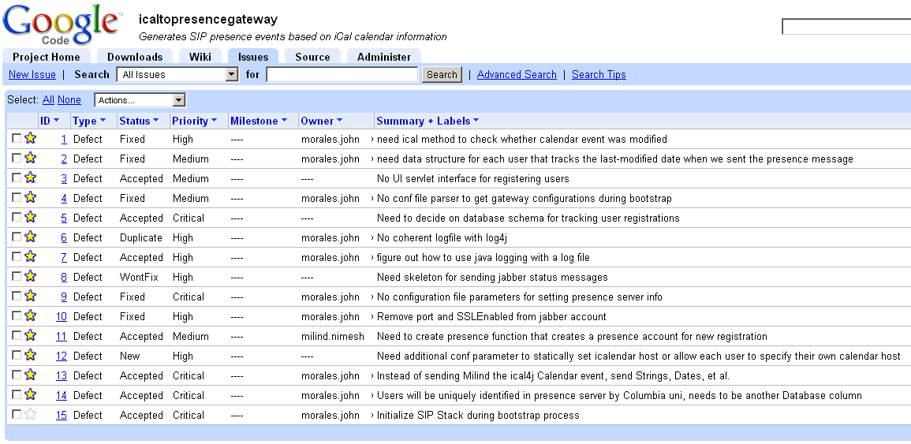

Gateway that generates SIP presence events based on iCal calendar information, allowing for automated busy tracking.
Provide a brief introduction to what you have done and lay out the organization of the remainder of the report, with hyperlinks to each section.
Citations should be of the form:
In earlier work [1], we showed that HTML is a Turing machine.
Each paragraph should start with
<p>and paragraphs should be separated by a blank line. For easier editing and source viewing, lines should be folded to 72 characters.
You may use all of the HTML 3.2 or HTML 4.0 elements, including tables. Avoid frames and aninmated GIF lines for the report. Do not use Microsoft Word to generate HTML, as the output is only viewable on Microsoft browsers. If you need to use an HTML editor, consider Netscape or Frontpage.
For ease of printing, the report should be a single HTML file, with all images in the same directory.
It seems that for the most part that such a iCalendar to SIP Presence function does not yet exist, at least in an open-source implementation or outside of a private corporate enterpise. There are likely many such applications with similar syncing functionality, but as far as we can determine the SIP Presence back end is a first.
In terms of the iCalendar servers, a quick search will make it appear that there are many to choose from. When examined more closely, however, most of these "servers" appear to be actually be clients, and not perhaps not too trustworthy. (i.e., no source code, just a win32 binary, "Free iCalendar Server!")
Other legitimately open-source implementations appear to have been abandoned:
The strongest implementations are both Apple's: the open-source Darwin Calendar Server written in Python and released in August, 2006; this server seems by far the most mature and has the best documentation. There is also a closed-source relative iCal Server included on OS X 10.5 (Leopard).
Similar to iCalendar servers, open source SIP Presence implementations appear to be few not very mature.
Provide background on the subject and components. The title of this section is likely to differ from project to project and you may have several of these sections.
If applicable to your project, give an overview of the architecture of the software, i.e., which modules do what. Justify the overall architecture and briefly discuss alternatives, if you have considered (and discarded) them. From your description, a reader should be able to understand what the various components do and which one would need to be modified to extend the software's functionality. Also indicate the rough complexity (in lines of code) and language used.
Please refer to this page for detailed information about:
In addition, the install page covers:
Where applicable, this describes any measurements or tests conducted.
We are using Google Code for project hosting, and in turn using its issue tracker for tasks. Below is a current snapshot of the issue list:
You may view this issue list yourself at this site:
http://code.google.com/p/icaltopresencegateway/issues/list